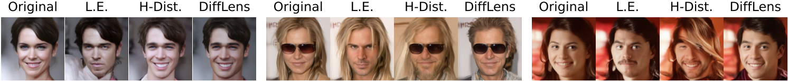
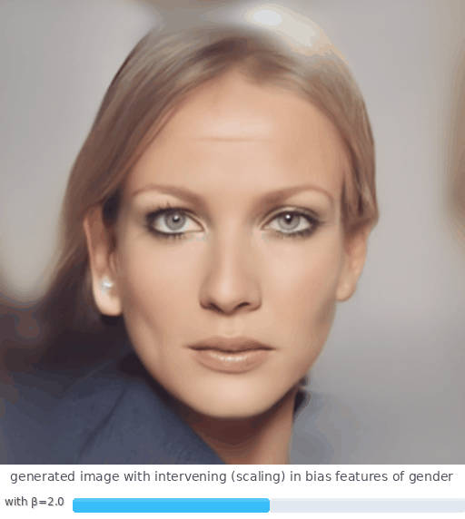
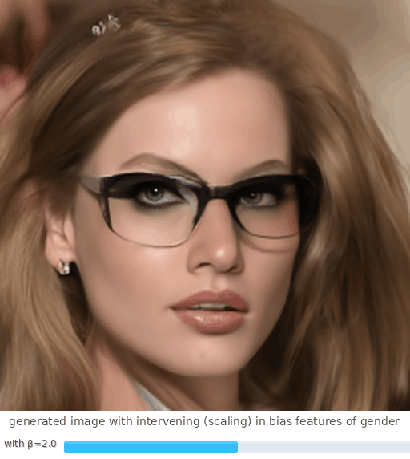
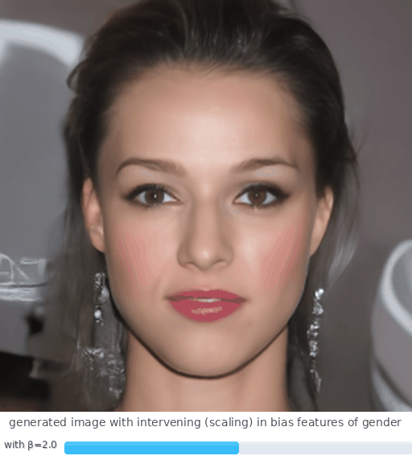
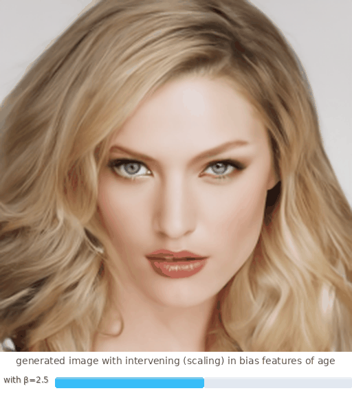
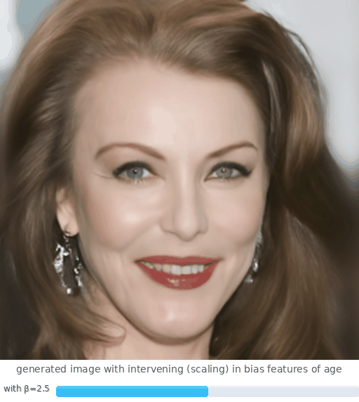
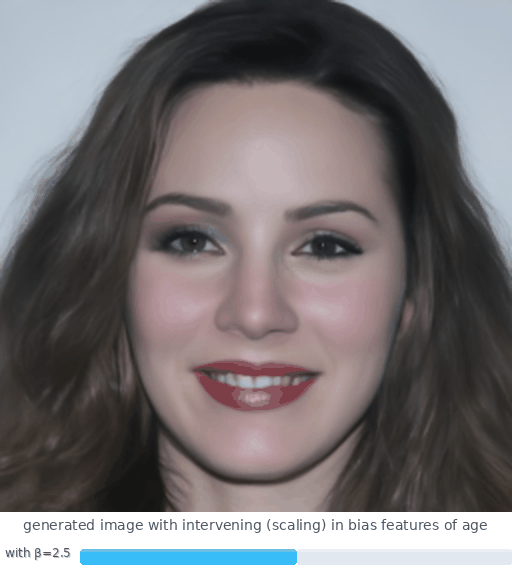
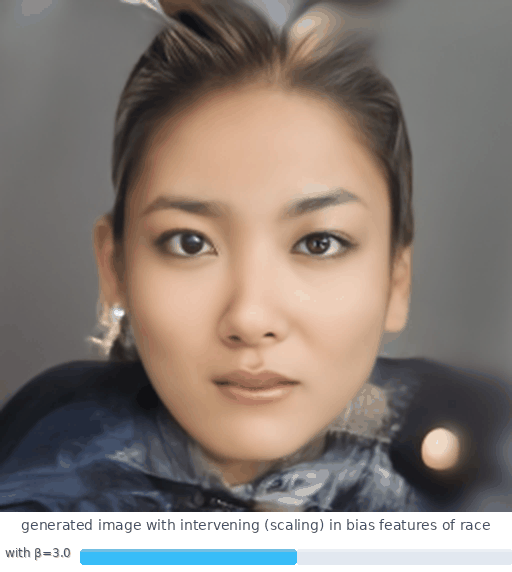
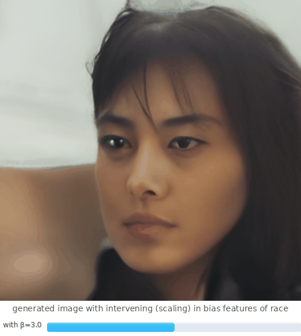

Accurate Identification of Bias Feature
We preserves overall image semantics such as smile and eyeglasses while other methods frequently introduce distortions or lose important details.

Individual Image Transformations Along The Gender Axis
We achieve smooth and consistent transitions that preserve semantic features like facial expressions, while other methods show distortions and loss of detail at higher imbalance ratios.

Fine-grained Control and Editing
Gender



Age



Race


BibTeX
@article{shi2025dissecting,
author = {Shi, Yingdong and Li, Changming and Wang, Yifan and Zhao, Yongxiang and Pang, Anqi and Yang, Sibei and Yu, Jingyi and Ren, Kan},
title = {Dissecting and Mitigating Diffusion Bias via Mechanistic Interpretability},
journal = {CVPR},
year = {2025},
}